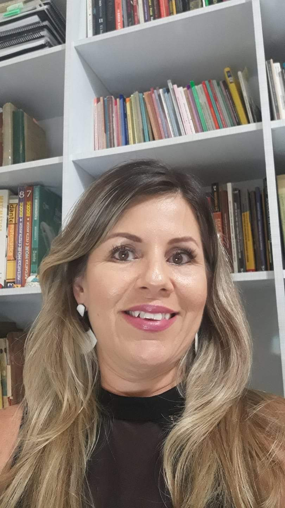
Pesquisadores do HIFEM
O HIFEM é constituído por pesquisadores de diferentes estados do Brasil, seus respectivos orientandos e colaboradores vinculados às temáticas de História, Filosofia e Educação Matemática.
Integrantes atuais
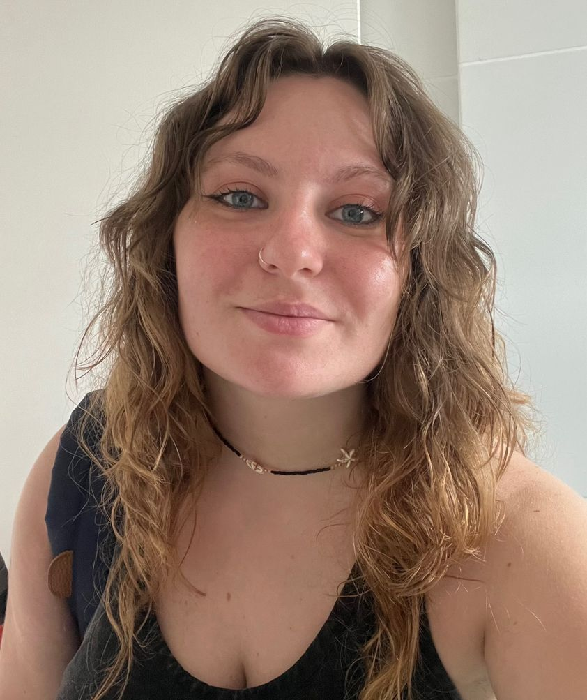
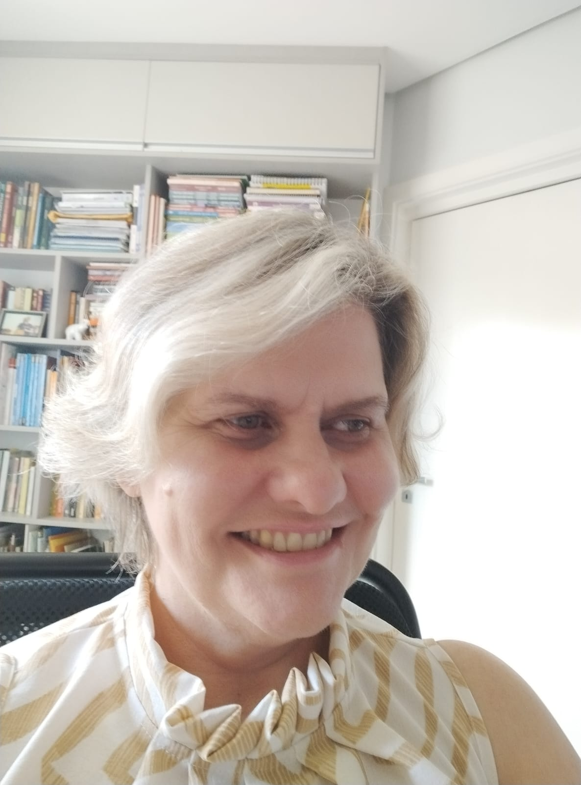
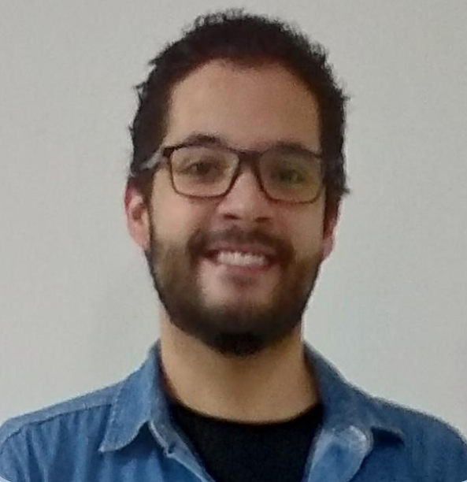
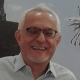
Antonio Miguel
Lattes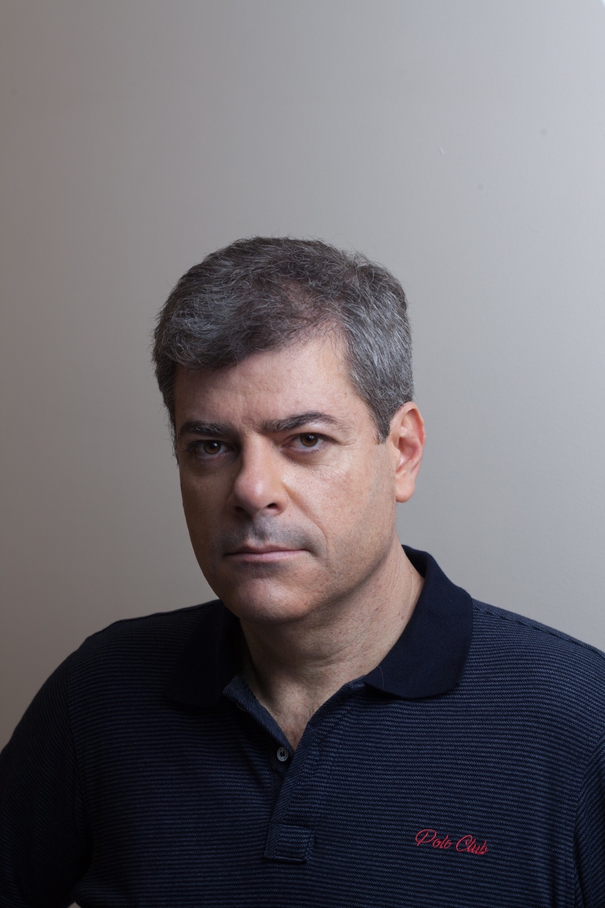
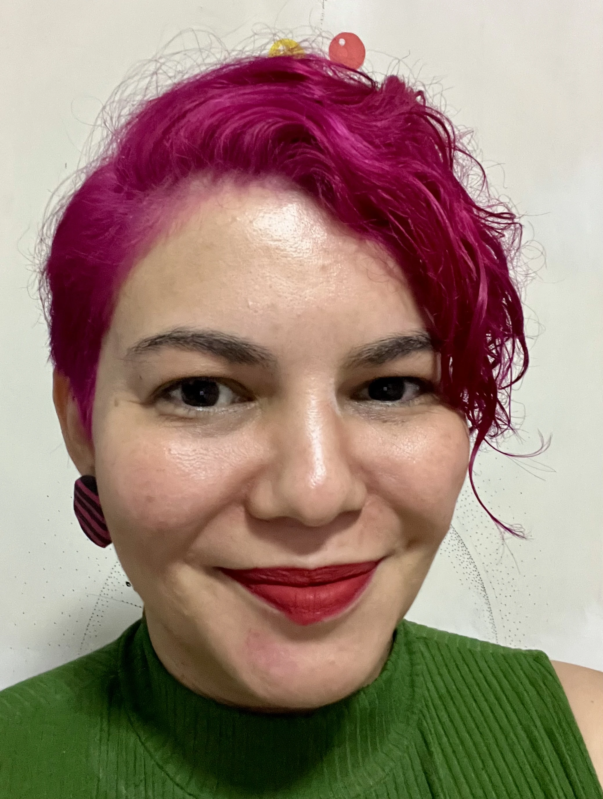
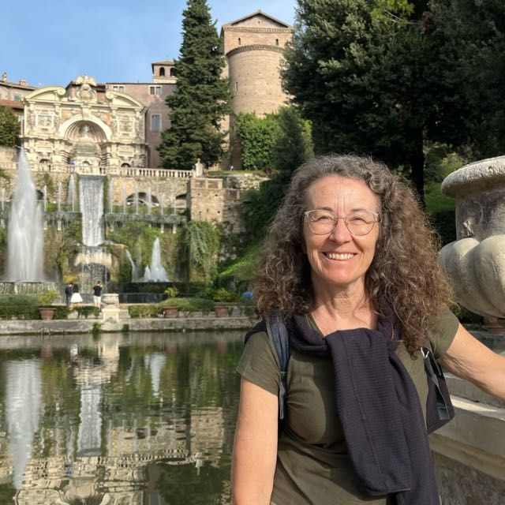
Lafayette de Moraes
LattesMaria Angela Miorim
Lattes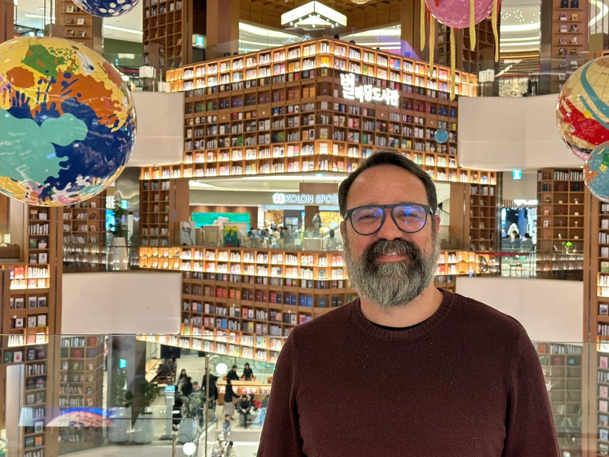
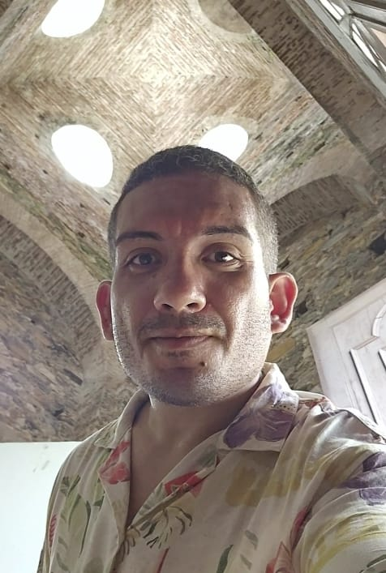
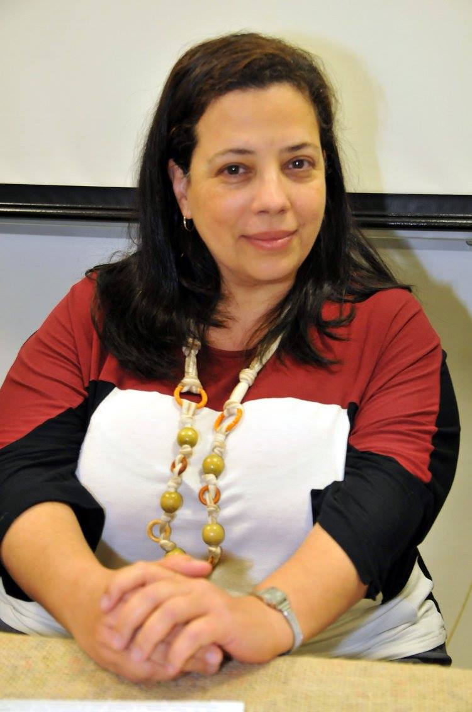
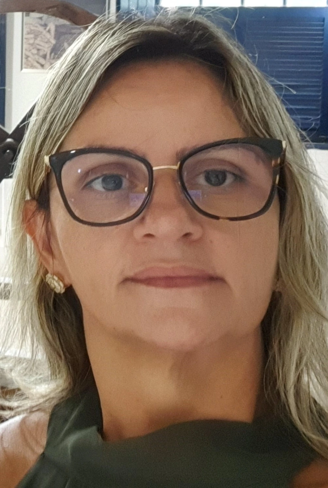